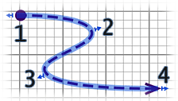

| Editar polilinhas e curvas | |||
Pode editar a localização das polilinhas com o rato, depois de as seleccionar na planta. Quando uma polilinha está seleccionada na planta, pode mover qualquer um dos seus pontos, com os indicadores que aparecem em cada ponto da polilinha seleccionada.  Quando o ponteiro do rato está sobre um destes indicadores, muda para lhe mostrar que pode arrastar
e largar esse ponto para o mover. No painel de polilinhas, pode alterar a espessura da polilinha seleccionada, as setas desenhadas nos seus extremos, o estilo de linhas unidas, o estilo do traço e a sua cor. A última escolha da lista pendente Estilo de junção permite desenhar uma curva em vez de linhas. |
|